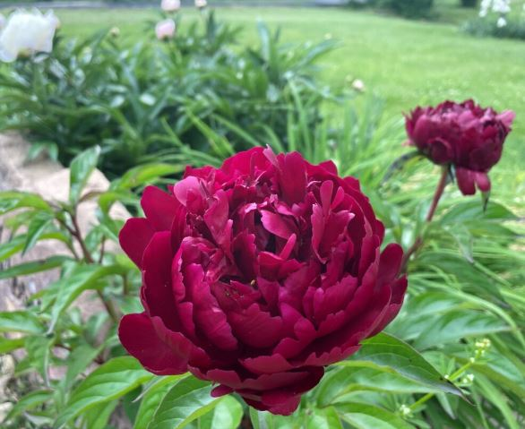
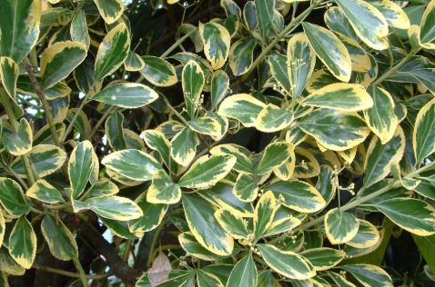
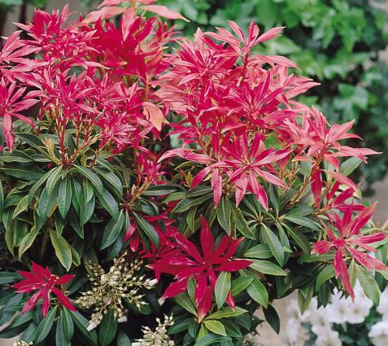
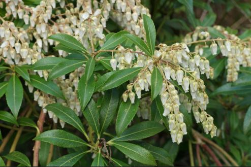
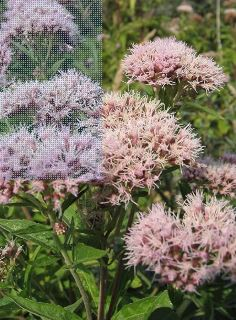
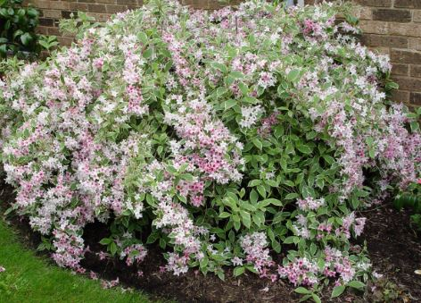
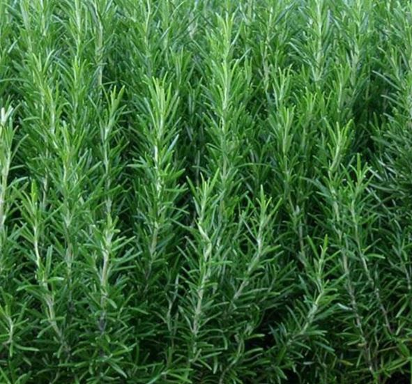

Swimming Pool Area
Back to Home
Peony
Nature: Slow-growing but rewarding, peonies are aristocratic plants with a brief but keenly anticipated flowering in late spring to early summer.
Size: 1m high
Habitat: 6h of full sun desired
Prune: Cut peony blossoms as soon as they begin to fade

Euonymus japonicus, Japanese Spindle Tree
Nature: Herbaceous flower, Deciduous, Flowering
Size:2.5-4m
Habitat: East–facing or North–facing or South–facing or West–facing
Prune: No routine pruning necessary unless shaping. Remove diseased, damaged, congested or crossing shoots.

Pieris Japonica
Nature: A slow-growing evergreen shrub
Size:2.5-4m
Habitat: Grow in moderately fertile, moist but well drained, acid soil; will not tolerate chalk soils or waterlogging.
Prune: Minimal pruning required.

Pieris Japonica
Nature: A slow-growing evergreen shrub
Size:2.5-4m
Habitat: Grow Pieris japonica in a sheltered, partially shaded spot in moist but well-drained, acidic soil. .
Prune: Minimal pruning required.

Eupatorium cannabinum. Hemp Agrimony
Nature: Dusty pink, fluffy flower heads grow in bold, dome-shaped clusters on tall, reddish stems
Size:1.5
Habitat: A great choice for wildflower meadows, wildlife gardens, cottage gardens and borders
Prune: Cut back spent flowers at end of the flowering season.

Weigela 'Florida Variegata'
Nature: Masses of funnel-shaped, pale pink flowers on graceful arching stems in May and June and white-edged, grey-green leaves.
Size:2.5
Habitat: Although this deciduous, variegated shrub prefers fertile, well-drained soil it will thrive almost anywhere.
Prune: Once established prune each year in mid-summer after flowering, removing one or two of the older stems to the base and cutting back the flowered stems to strong shoots below the spent flowers.

Rosemary (Salvia rosmarinus)
Nature: Rosemary (Salvia rosmarinus) is an evergreen shrub with aromatic leaves and small mauve, blue, pink or white flowers. I
Size:1.5m
Habitat: It likes a warm, sunny location with light, free-draining soil, and is also happy in containers.
Prune: To keep rosemary compact and encourage fresh young foliage, trim it back lightly every year after the flowers fade, but avoid cutting back into old wood.

Lavender
Nature: A compact, bushy shrub to 1m tall and rather more wide, with narrow, aromatic, grey-green leaves.
Size:1.5m
Habitat: It likes a warm, sunny location with light, free-draining soil, and is also happy in containers.
Prune: The most important time to prune lavender is immediately after the plant flowers in summer to early autumn.

Smoke Bush (Cotinus coggygria)
Nature: A large, bushy, deciduous shrub to 5m, with rounded leaves turning yellow, orange and red in autumn. Large feathery inflorescences are buff at first, later greyish.
Size:4 - 8m in 5-10 years1.5m
Habitat: South, West or East facing in sun or partial shade
Prune: No routine pruning necessary. Remove diseased, damaged, congested or crossing shoots. Shoots that are growing in unwanted directions can also be pruned out.